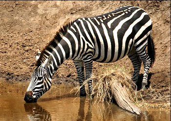
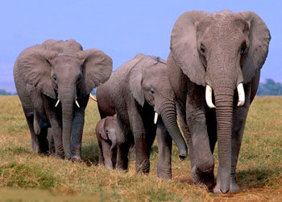
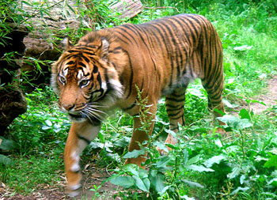
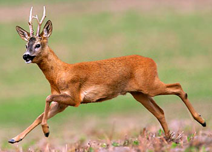
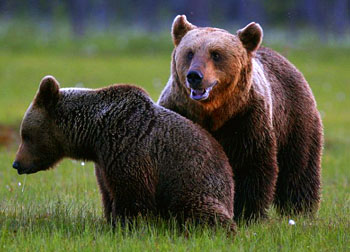

通称兽类。全身披毛、运动快速、恒温胎生的脊椎动物，是脊椎动物中躯体结构、功能行为最为复杂的最高级动物类群。身体被毛；体温恒定；胎生（单孔类例外）和哺乳；心脏左、右两室完全分开，左心室将鲜血通过左动脉弓泵至身体各部；脑颅扩大，脑容量增加；中耳具有3块听骨；下颌由1块齿骨构成，与头骨为齿—鳞骨关节式；牙齿分化为门齿、犬齿和颊齿；7个颈椎，第1、2颈椎分化为环椎和枢椎。兽类是动物界进化地位最高的自然类群，除南极、北极中心和个别岛屿外，几乎遍布全球。根据Wilson&Reeder分类系统，将哺乳动物分为3亚纲29目153科1229属，共5416种。
|  | |
|---|---|
|  | |
|  |  |
|  |